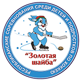

История соревнований насчитывает уже практически полвека. Основателем турнира и председателем клуба «Золотая шайба» был «отец русского хоккея» Заслуженный мастер спорта и заслуженный тренер СССР Анатолий Тарасов.
С распадом СССР прекратил существование Всесоюзный детский спортивный клуб «Золотая шайба», наступил период спада в развитии детского любительского советского хоккея. На территории Республики Беларусь турнир был возрожден благодаря инициативе Главы государства. С 1997 года турнир проводится на призы Президента Республики Беларусь. Во многом именно благодаря этому турниру во всех районах страны детский хоккей получил свое массовое развитие.